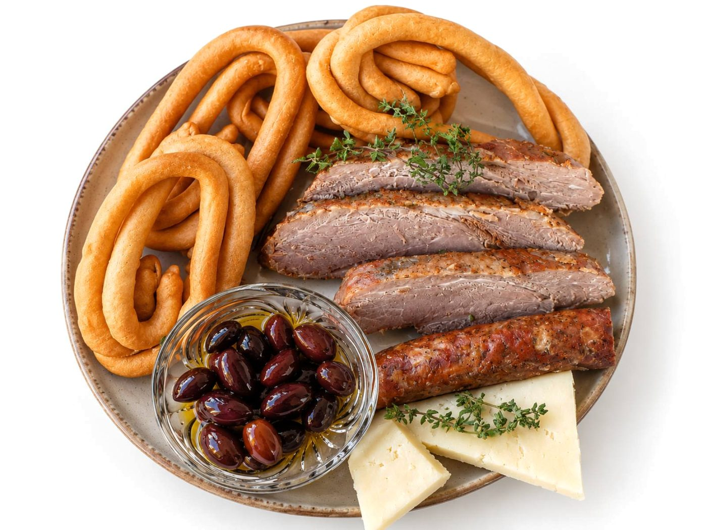
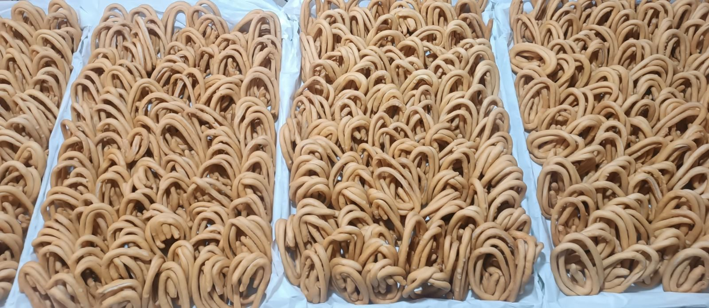
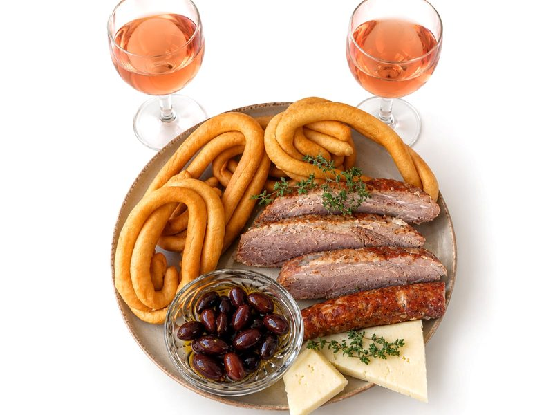
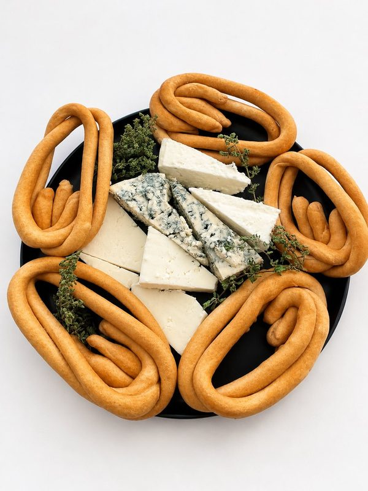
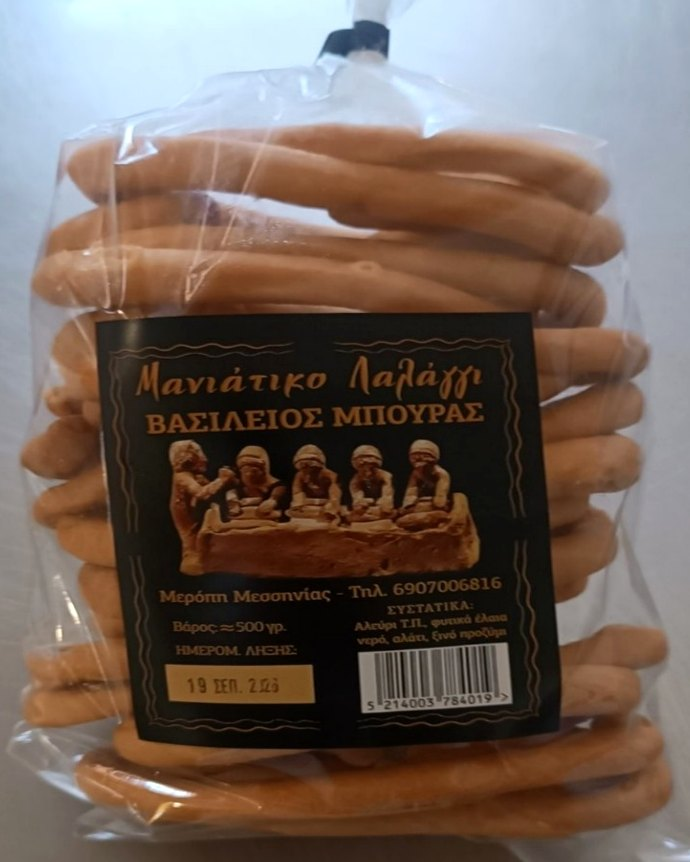

Χειροποίητα λαλάγγια Μάνης Μανιάτικο Λαλάγγι
Η τραγανή παράδοση που αντέχει στον χρόνο.
Χειροποίητα στη Μεσσηνία, με ξινό προζύμι και τη συνταγή των γιαγιάδων μας. Χωρίς κανένα συντηρητικό.
Παραγγελίες στο 690 700 6816
- Χειροποίηταμε ξινό προζύμι
- 5 υλικάκαι τίποτε άλλο
- 100% φυτικάvegan και νηστίσιμα
- Χωρίς συντηρητικάόπως παλιά

Φτιαγμένα στο χέρι, σε ποσότητες για φούρνους, catering, καταστήματα και εστιατόρια.
Μια γευστική παράδοση αιώνων
Τα λαλάγγια, οι τηγανίτες της Μάνης, έχουν τις ρίζες τους στα βυζαντινά χρόνια. Οι άνθρωποι της υπαίθρου τα έφτιαχναν ως θρεπτικό και ανθεκτικό τρόφιμο, με τα λίγα υλικά που έδινε η σκληρή μανιάτικη γη.
Την παραμονή των Χριστουγέννων και των Φώτων κάθε σπίτι έπλαθε λαλάγγια, με τρία έθιμα.
-
Η πρώτη τηγανίδα
Στρογγυλή, με σταυρό στη μέση, για την ευλογία του σπιτιού.
-
Η δεύτερη τηγανίδα
Για το ίδιο το σπίτι και την οικογένεια.
-
Η μοιρασιά
Καλάθια με λαλάγγια για όσους δεν μπορούσαν να φτιάξουν.
Η τέχνη του χειροποίητου
Πέντε απλά υλικά και τίποτε άλλο. Χωρίς συντηρητικά, 100% φυτικό και νηστίσιμο.
- ΑλεύριΓια τη δομή της ζύμης.
- Ξινό προζύμιΓια το άρωμα και τη γεύση.
- ΝερόΓια ζύμη λεία και ελαστική.
- Φυτικά έλαιαΓια το τηγάνισμα.
- ΑλάτιΚαι τίποτε άλλο.
Η παραδοσιακή διαδικασία
Ζύμωμα
Η ζύμη δουλεύεται μέχρι να γίνει λεία και ελαστική, και ξεκουράζεται.
Πλάσιμο
Πλάθεται σε λεπτά, μακρόστενα κορδόνια, τα φυτίλια.
Τηγάνισμα
Τα φυτίλια διπλώνονται και πέφτουν στο βαθύ τηγάνι.
Χρυσαφένιο χρώμα
Βγαίνουν μόλις πάρουν βαθύ χρυσαφένιο χρώμα.
Ένα προϊόν, αμέτρητοι συνδυασμοί
Νόστιμα σκέτα, αλμυρά στο τραπέζι των μεζέδων ή γλυκά με μέλι. Εσείς πώς τα προτιμάτε;
| Η στιγμή | Με τι ταιριάζει |
|---|---|
| Σκέτα | |
| Όπως είναι, τραγανά |
|
| Αλμυρά | |
| Μανιάτικο πρωινό |
|
| Τέλειος μεζές |
|
| Στο ποτήρι, στο φλιτζάνι |
|
| Γλυκά | |
| Παραδοσιακά μελωμένα |
|
| Μοντέρνες παραλλαγές |
|



Η γεύση της Μάνης στο κατάστημά σας
Μανιάτικο Λαλάγγι, χύμα και σε σακουλάκι 500 γρ.
Τα διαθέτουμε κυρίως χύμα, σε ποσότητες για την επιχείρησή σας, αλλά και σε διάφανο σακουλάκι 500 γρ. για το ράφι. Τιμές και διαθεσιμότητα για χονδρική, απευθείας από τον παραγωγό.
- Διάθεση
- Κυρίως χύμα, σε ποσότητες για επαγγελματίες
- Σακουλάκι
- Περίπου 500 γρ., PP κατάλληλο για τρόφιμα
- Συστατικά
- Αλεύρι Τ.Π., νερό, φυτικά έλαια, αλάτι, ξινό προζύμι
- Διατήρηση
- Δροσερό, ξηρό μέρος. Κατά προτίμηση εντός 2 μηνών.
- Barcode
- 5214003784019
Συνεργαζόμαστε με
- Φούρνους και αρτοποιεία
- Catering
- Παντοπωλεία και delicatessen
- Ξενοδοχεία και μπουφέ πρωινού
- Εστιατόρια, ταβέρνες και μεζεδοπωλεία
- Καταστήματα τοπικών προϊόντων
Συχνές ερωτήσεις
Τι είναι τα λαλάγγια;
Οι παραδοσιακές τηγανίτες της Μάνης, με ρίζες στα βυζαντινά χρόνια. Λεπτά κορδόνια ζύμης με ξινό προζύμι διπλώνονται και τηγανίζονται μέχρι να πάρουν βαθύ χρυσαφένιο χρώμα.
Είναι τα λαλάγγια νηστίσιμα και vegan;
Ναι. Είναι 100% φυτικό προϊόν, χωρίς γαλακτοκομικά ή ζωικά παράγωγα και χωρίς συντηρητικά.
Πόσο διατηρούνται τα λαλάγγια;
Διατηρούνται σε δροσερό και ξηρό μέρος και καταναλώνονται κατά προτίμηση εντός δύο μηνών.
Με τι τρώγονται τα λαλάγγια;
Είναι νόστιμα και σκέτα, κάθε ώρα της ημέρας. Ταιριάζουν και αλμυρά με φέτα, σφέλα Μάνης, ελιές Καλαμών και σύγκλινο, ή γλυκά με μέλι, κανέλα και καρύδια, ζεστή σοκολάτα ή παγωτό βανίλια.
Πώς αγοράζω λαλάγγια χονδρικά;
Καλέστε στο 690 700 6816 για τιμές και διαθεσιμότητα. Συνεργαζόμαστε με φούρνους, αρτοποιεία, catering, παντοπωλεία, delicatessen, ξενοδοχεία, εστιατόρια και καταστήματα τοπικών προϊόντων.
Τα λαλάγγια πωλούνται χύμα;
Ναι. Τα διαθέτουμε κυρίως χύμα, σε ποσότητες για επαγγελματίες, αλλά και σε διάφανο σακουλάκι 500 γρ. για το ράφι.